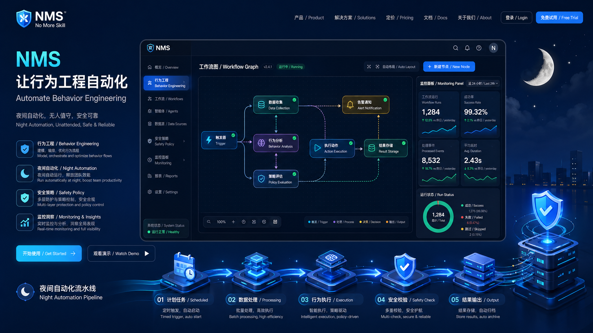

Daily Agent Developer Report
一个 Agent 开发者的一天，如何被 NMS 记录成可复用资产
这是一份展示型日报：模拟一个日常使用 Codex、Claude Code、OpenCode 的开发者，如何通过 NMS 把零散的 AI 协作沉淀为 workflow、skill 频率、执行状态和安全审计。
Sessions18
Saved Time4.6h
Main Flow83%
Safe Runs12/12
今日驾驶舱
先让观众看到“这不是一个 prompt 收藏夹”，而是一个会沉淀行为、暴露风险、帮助复盘的个人操作台。
82
User Profile
结构化、先拆解、重安全边界
这个开发者更偏向“先理解需求，再分阶段落地”。NMS 观察到他常把任务拆成分析、生成、验证、审查四段，并经常要求保留可解释日志。
今日高频技能
主工作流
NMS 最适合讲的点：它学的不是单条 prompt，而是“任务推进路径”。
1需求压缩从对话中提炼目标、约束、输入输出。
2代码分析定位模块、识别风险、建立改动范围。
3实现生成小步修改，优先复用项目已有结构。
4测试验证运行 build、test、dry-run 或最小验收链。
5复盘沉淀更新 report、doctor、replay 建议。
Agent 工作日志
这部分适合视频演示：一眼看出 NMS 如何把日常开发过程变成可解释记录。
今天的真实工作节奏
PRD 拆解
plan把“优化 skill 调用体验”拆成入口、路由、文档、验证四个任务。
Agent 路由实现
ship补 `/nms`、`nms-flow`、`nms route` 三类调用路径，降低宿主差异。
演示项目生成
demo把产品说明改造成 5 章 web-video-presentation，可录屏展示。
报告与可视化
review生成 NMS 行为报告页，整理 skill 使用频率、主 workflow 与安全护栏。
开发者最常用入口
nms ingest写入压缩上下文，沉淀 session。nms flow查看行为驾驶舱，判断流程是否稳定。nms replay复现高频 workflow，减少重复解释。nms night默认 dry-run，输出可审计状态链。nms doctor检查数据、schema、Git 安全状态。nms report输出可汇报的周报与展示材料。安全与信任
这里负责回答观众最关心的问题：为什么可以让 Agent 在夜间自动推进？
Gate Philosophy
不是让模型自由发挥，而是让模型在状态机里干活。
NMS 的 night harness 把开发过程拆成 PLAN、EXECUTE、TEST、REVIEW、GATE。测试不过或审查不过，结果就是回滚，而不是继续往前冲。
展示时可以这样讲：NMS 先保证“不会乱改”，再追求“自动推进”。
六条硬护栏
01默认 dry-run，不写仓库。
02`--apply` 必须显式开启。
03TEST 和 REVIEW 不允许跳过。
04main 分支提交保护。
05白名单路径和文件类型限制。
06失败记录 reason 与 recovery hint。
讲解建议
这份页面可以直接作为视频中的“产品运营台”画面。
先讲痛点
“为什么 skill 越装越多，AI 却没有越来越懂你？”用这句话开场，可以迅速让观众理解产品的核心矛盾。
再讲机制
用主工作流和 agent timeline 解释 NMS 学的是行为路径，不是收藏 prompt。然后展示 `nms flow` 和 `nms night`。
最后讲安全
用 guardrails 回答“为什么敢让它自动执行”。这会让 NMS 从玩具 demo 变成工程工具。